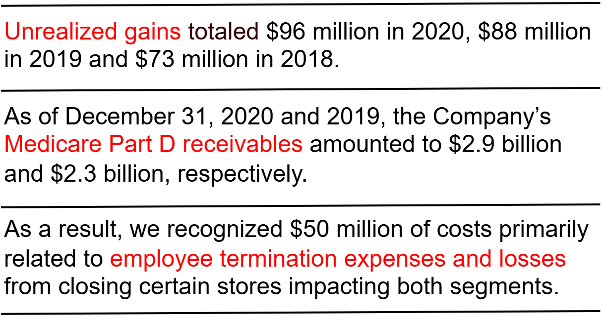

Named Entity Recognition with BERT
Course Project

A model for extracting key performance indicators (KPIs) from financial reports based on BERT.
Abstract
This project considers the task of named entity recognition (NER), where the objective is to extract key information in form of entities, e.g. persons, locations, companies from a document. We focus on extracting key performance indicators (KPIs) from financial reports, based on the dataset provided in Deußer et al. 2022. In our model, sentence embeddings are generated using BERT, and then a small MLP is used to classify the tokens.
Method
The pipeline consists of the following steps:
- Data preparation: The dataset is preprocessed to extract the text and labels.
- Tokenization: The text is tokenized using the BERT tokenizer.
- Embedding generation: The tokenized text is passed through the BERT model to generate embeddings.
- Classification: A small MLP is used to classify the tokens based on the embeddings.
Results
- The trained model achieved an F1 score of 0.92 on the test set.
- It is a significant improvement over the baseline model that utilized the untrained BERT model.
- More detailed results can be found in the Colab notebook.
References
- KPI-EDGAR: A Novel Dataset and Accompanying Metric for Relation Extraction from Financial Documents, ICMLA 2022.
- Bert: Pre-training of deep bidirectional transformers for language understanding, ACL 2019.
- Attention is all you need, NeurIPS 2018.